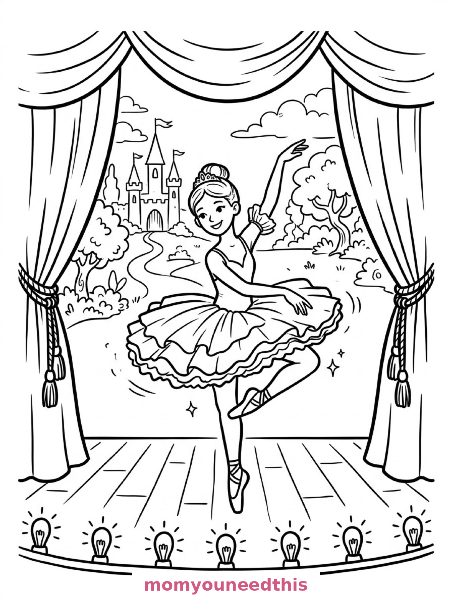
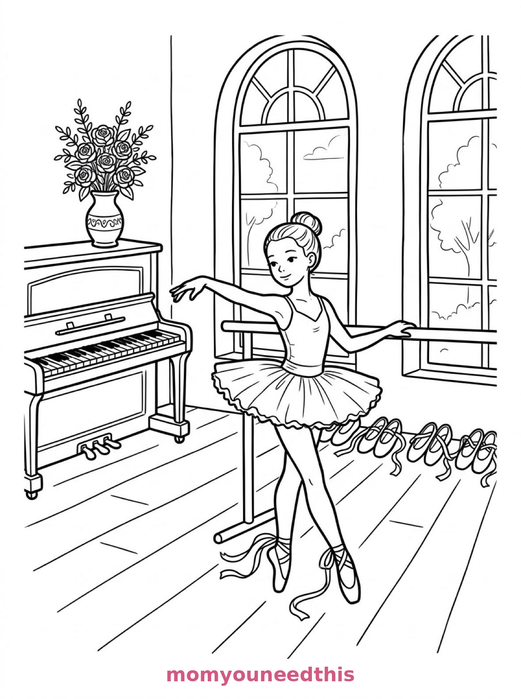
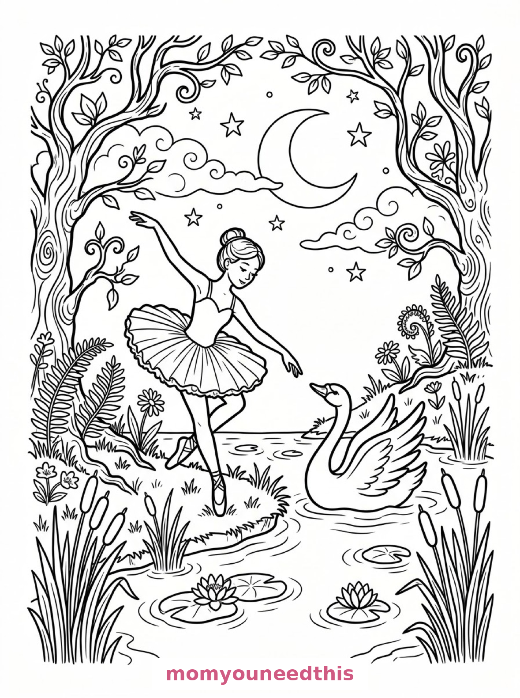

Free Ballerina Coloring Pages Stage, Studio & Moonlit Lake Printables
These free ballerina coloring pages dance through three scenes — a pirouette on a theatre stage, practice at the studio barre, and a duet with a swan by a moonlit lake. Download the set below, print at home on letter-size paper, and let the coloring fun begin. No signup needed.
Last updated: October 23, 2026
Quick Answer
Yes — this page has three free printable ballerina coloring pages: a ballerina mid-pirouette on a theatre stage, a young dancer practicing at the barre in a studio, and a ballerina dancing with a swan beside a moonlit lake. Bold outlines and big spaces, made for little hands. Download, print on letter-size paper, and hand over the crayons — no signup, no cost.
At a Glance
- Ages: 3–8
- Pages: 3 free printables
- Format: Print at home, letter size
- Cost: Free, no signup
- Supplies: Crayons or markers
- Time: 10–20 minutes
🩰 Ballerina Pirouette on Stage Coloring Page

🎨 Download Your Free Stage Ballerina Coloring Page
A ballerina turns mid-pirouette on a theatre stage, her layered tutu fanning out, with heavy curtains tied back, a painted backdrop of a castle garden and footlights along the stage edge — bold outlines, big spaces, zero signup.
⬇️ Download Free Stage Ballerina Page 🖨️ Print Stage Ballerina Page🎁 Free printable for preschoolers & kids
🎹 Ballerina at the Barre Coloring Page

🎨 Download Your Free Studio Ballerina Coloring Page
A young ballerina practices at a barre in a dance studio with tall arched windows, ribbons trailing from her pointe shoes, a piano in the corner with a vase of roses, and slippers lined up beneath the window — bold outlines, big spaces, zero signup.
⬇️ Download Free Studio Ballerina Page 🖨️ Print Studio Ballerina Page🎁 Free printable for preschoolers & kids
🦢 Ballerina and the Swan Coloring Page

🎨 Download Your Free Swan Lake Coloring Page
A ballerina dances with a swan beside a moonlit lake, with lily pads and reeds at the water's edge, twisted trees around them, and stars and a crescent moon above — bold outlines, big spaces, zero signup.
⬇️ Download Free Swan Lake Page 🖨️ Print Swan Lake Page🎁 Free printable for preschoolers & kids
More Coloring Pages
Tap any picture to open its theme page and download the free printable.


🩰 How To Use This Page
- Browse the three designs and pick the dance scene your child will love most.
- Tap download or print under that design — the file opens full-size, ready for letter-size paper.
- Print a couple of copies of the stage pirouette — every tutu deserves its own color scheme.
- Color together with crayons or markers, then take a bow.
🎀 Why Kids Love Ballerina Coloring Pages
Ballerinas bring the two things kids love most in a coloring page: a beautiful costume to design and movement to imagine. A tutu that fans out in layers, ribbons that trail from pointe shoes, a stage with footlights — these pages are recitals waiting to happen, and the colorer is the costume designer.
The three scenes also tell the whole story of dancing: the performance, the practice, and the daydream. Kids who take dance class will recognize the barre and the lined-up slippers instantly; kids who don't will still feel the magic of the moonlit lake. And every finished page hides a small performance of its own: the dancer on the page has taken her bow, and the colorer has earned one too — preferably in the living room, to real music, with the finished page held high like a program while the whole family applauds.
🩰 Meet the Three Ballerina Scenes on This Page
The pirouette on stage. A ballerina turns mid-pirouette on a theatre stage, her layered tutu fanning out, with heavy curtains tied back at the sides, a painted backdrop of a castle garden and footlights along the stage edge. It is the showpiece page in the set — the tutu's layers are made for gradients of pink, lavender or blue.
The practice at the barre. A young ballerina practices at a barre in a dance studio with tall arched windows, her ribbons trailing from her pointe shoes, with a piano in the corner, a vase of roses on top, and other dancers' slippers lined up beneath the window. It is the homiest page in the set — the behind-the-scenes one dancers love most.
The dance with the swan. A ballerina dances with a swan beside a moonlit lake in an enchanted forest scene, lily pads and reeds at the water's edge, twisted trees around them, and stars and a crescent moon above. It is the dreamiest page in the set — color the sky deep and the whole lake glows.
✏️ Ballerina Coloring Tips
- Layer the tutu. A pale color on every layer, then a darker shade on the bottom layer only — instant depth on the stage page.
- Ribbons are the detail spot. The trailing ribbons on the studio page look beautiful in a contrasting color to the shoes.
- Make the lake page a night scene. Deep blue sky, white swan, pale moon — leaving the swan white is the pro move.
- Add sparkle if you have it. A touch of glitter glue on the tutu or the stars turns a coloring page into recital art. Optional, but delightful.
🩰 Coloring Pages for Different Ages
For ages 3 to 4, start with the pirouette on stage. The dancer is one big graceful shape, the tutu is a satisfying fan of layers, and the curtains can be any bold color.
For ages 5 to 6, the studio barre page is the sweet spot. The dancer is still big and bold, but the piano, the roses and the row of slippers add real choices.
For ages 7 to 8, hand over the swan lake. The reeds, the lily pads, the twisted trees and the night sky reward careful coloring — and the finished page looks like a storybook.
🎀 More Ballerina Fun After Coloring
Hold a living-room recital: put on some music, let your child pick the finished page that matches the mood, and dance the scene out. The coloring page becomes the program cover.
For more graceful scenes, the princess coloring pages are the natural next stop — and the calm, pretty aesthetic coloring pages keep the same gentle mood going with windows, tea and gardens.
🔗 More Free Printables You’ll Love
- Free Princess Coloring Pages Crowns, castles and royal scenes to print and color.
- Free Aesthetic Coloring Pages Calm, pretty scenes: a cottage window, a tea still life, a garden bench.
- Free Snowflake Coloring Pages Three giant snowflakes to pattern, decorate and color.
- All Free Coloring Pages Browse every free coloring page on the site, organized by theme.
❓ Ballerina Coloring Pages FAQ
Are these ballerina coloring pages really free?
Yes — all three designs on this page are free original printables from MomYouNeedThis. Download them, print them at home, and color — no signup and no cost.
What ages are these coloring pages best for?
Kids ages 3 to 8 get the most from this set. The stage pirouette is the gentlest start for younger children, while the studio and moonlit lake scenes have the detail older kids enjoy.
How do I print a coloring page?
Tap the download button under the design you want, then print the file on regular letter-size paper. The print button opens the full-size page in a new tab if you prefer to print from there.
Is there a Swan Lake coloring page in this set?
Yes — the third design shows a ballerina dancing with a swan beside a moonlit lake, with lily pads, reeds, twisted trees and a crescent moon.
Can I make a ballerina coloring book from these pages?
Yes — print all three designs, stack them in order, and staple along the left edge. Add a cover sheet with your child's name for a finished homemade ballerina coloring book.